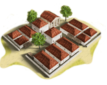
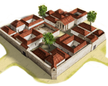
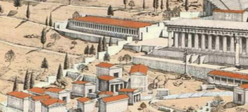

Imperium
Imperium Small Colony chain
2 levels, each replacing the one before it — you upgrade in place rather than building alongside.
Small Colony → Large Colony
Pictures are the game's own building art. Where a culture ships none of its own, the game falls back to another culture's, and that is what is shown here.
Levels at a glance
| Level | Cost | Build time | Minimum settlement | Upgrades to | Excludes | |
|---|---|---|---|---|---|---|
 | Small Colony | 6,000 | 6 | town | Large Colony | Homeland at Homeland or above |
 | Large Colony | 12,000 | 10 | large town | — | Homeland at Homeland or above |
Costs in denarii, build time in turns.
Small Colony

A small Latin colony to gain a cultural, military and economic foothold.
This level enables factional recruitment outside unit's homeland up to tier 3 and grants a minor trade bonus, but also causes a minor public order penalty. It increases spread of the factional culture in 50% (unless Homeland is built).
History
Appian claims that the Romani, as they subdued the Italian peninsula, were accustomed to seize some land from their defeated opponents and settle colonists there, using them as garrisons. Cicero is equally forthcoming: 'our ancestors established coloniae as a defence against danger so that they seem less like towns of Italy and more like propugnacula imperii' (bulwarks of power). The intent behind establishing Latin coloniae was to project Roman influence into defeated regions which remained hostile and were beyond territory controlled by the res publica. They were designed for defence with large populations: numbers given by Livy vary from 2500 colonists at Cales to 6000 at Alba Fucens.
Archaeological excavation at Fregellae, Paestum and Alba Fucens gives insight into the development of coloniae. The earliest buildings were the fortifications, fairly large for settlements serving a garrison purpose. Then work began on public buildings: the local senate, comitium, usually a temple. This urban centre, modelled on Rome, was augmented by market spaces and basilicae.
The colonists of a Colonia Latina held Latin rights, rather than full citizen rights. The majority were originally full Roman citizens who felt that exchanging citizenship for Latin rights plus a large piece of land was a good bargain. Politically, the Coloniae Latinae were independent city-states allied to Rome, required to supply soldiers to the Roman army but not subject to taxation or Roman magistrates. During the second Punic War, every one of the nine Coloniae Latinae in southern Italy remained loyal, and none fell to Hannibal.
Wording varies by culture: 3 versions of this description exist in the game files.
| Cost | 6,000 denarii | Build time | 6 turns | Minimum settlement | town |
| Upgrades to | Large Colony |
What it does
- -2 public order (happiness)
- +1 trade income
- +5 taxable income
Religious belief — spreads 41 beliefs, by how much depending on what the region already believes.
Show the 41 beliefs
- Aeolian +2 to +8
- Arab +2 to +8
- Arcadian +2 to +8
- Armenian +2 to +8
- Baltic +2 to +8
- Bithynian +2 to +8
- Bosporan +2 to +8
- Cappadocian +2 to +8
- Carian +2 to +8
- Caucasian +2 to +8
- Celtic +2 to +8
- Cilician +2 to +8
- Dardanian +2 to +8
- delmato_pannonian (no name in the text files) +2 to +8
- Dorian +2 to +8
- Egyptian +2 to +8
- Epirote +2 to +8
- Ethiopian +2 to +8
- Germanic +2 to +8
- Greco-Bactrian +2 to +8
- Iberian +2 to +8
- Illyrian +2 to +8
- Indian +2 to +8
- Ionian +2 to +8
- Iranian +2 to +8
- Italic +2 to +8
- Judaean +2 to +8
- Liburnian +2 to +8
- Libyan +2 to +8
- Lycian +2 to +8
- Macedonian +2 to +8
- Mesopotamian +2 to +8
- Northwest Greek +2 to +8
- Paeonian +2 to +8
- Paphlagonian +2 to +8
- Phoenician +2 to +8
- Pisidian +2 to +8
- Scythian +2 to +8
- Thracian +2 to +8
- Triballian +2 to +8
- Venetic +2 to +8
Excludes: building this rules out Homeland at Homeland or above. Choose deliberately — this is not reversible by demolition in every case.
Large Colony
A major colony of Roman veterans that solidifies our grip on these lands, our people are here to stay.
This level enables top tier factional recruitment outside unit's homeland and grants a better trade bonus, but also causes a bigger public order penalty. It increases spread of the factional culture in 80% (unless Homeland is built).
Roman veteran colonies, the Coloniae Militaris, were by far the most numerous type of military settlements established by Rome. Roughly 180 were founded in just over a century, from the time of Marius through the reign of Augustus. The practice of establishing military colonies continued throughout the Principate. The primary purpose of the Coloniae Militaris was much different from the other types of Roman coloniae. They were not meant to secure a frontier (though they certainly did so), but to provide security in retirement for the landless soldiers of the professional army.
In the first century BC, almost all Roman soldiers were Roman citizens and naturally preferred to settle in Italy. As a consequence, about 70 of the 180 Roman military colonies founded in and around the 1st century BC were established in Italy. Yet there was relatively little unsettled land available at this time. Sulla solved this problem by settling his veterans on land confiscated from his political enemies. Caesar and the triumvirs preferred to avoid the political problems this caused and settled more of their veterans outside of Italy. Faced with the problem of reducing the size of the army by hundreds of thousands of men at the end of the civil war period, Augustus was forced to expel some Italians from their land in order take care of his soldiers, but was usually able to offer compensation.
During the 1st century BC, large numbers of coloniae were also founded in Spain (26), Africa (23), Asia Minor (14), Gaul (13), and Mauretania (12).
Wording varies by culture: 3 versions of this description exist in the game files.
| Cost | 12,000 denarii | Build time | 10 turns | Minimum settlement | large town |
What it does
- -4 public order (happiness)
- +2 trade income
- +10 taxable income
Religious belief — spreads 41 beliefs, by how much depending on what the region already believes.
Show the 41 beliefs
- Aeolian +4 to +16
- Arab +4 to +16
- Arcadian +4 to +16
- Armenian +4 to +16
- Baltic +4 to +16
- Bithynian +4 to +16
- Bosporan +4 to +16
- Cappadocian +4 to +16
- Carian +4 to +16
- Caucasian +4 to +16
- Celtic +4 to +16
- Cilician +4 to +16
- Dardanian +4 to +16
- delmato_pannonian (no name in the text files) +4 to +16
- Dorian +4 to +16
- Egyptian +4 to +16
- Epirote +4 to +16
- Ethiopian +4 to +16
- Germanic +4 to +16
- Greco-Bactrian +4 to +16
- Iberian +4 to +16
- Illyrian +4 to +16
- Indian +4 to +16
- Ionian +4 to +16
- Iranian +4 to +16
- Italic +4 to +16
- Judaean +4 to +16
- Liburnian +4 to +16
- Libyan +4 to +16
- Lycian +4 to +16
- Macedonian +4 to +16
- Mesopotamian +10 to +16
- Northwest Greek +4 to +16
- Paeonian +4 to +16
- Paphlagonian +4 to +16
- Phoenician +4 to +16
- Pisidian +4 to +16
- Scythian +4 to +16
- Thracian +4 to +16
- Triballian +4 to +16
- Venetic +4 to +16
Excludes: building this rules out Homeland at Homeland or above. Choose deliberately — this is not reversible by demolition in every case.